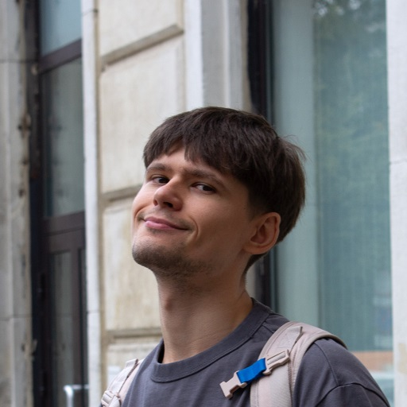

Senior Frontend Developer with 8+ years of experience building scalable web applications using React and TypeScript. Experienced in designing maintainable frontend architectures, optimizing performance, and building accessible user interfaces with strong focus on performance optimization, scalable UI architecture, accessibility (WCAG) and developer experience improvements in large monorepo environments.
Large-scale web banking platform aimed at improving digital customer experience and enabling faster release cycles for a major financial institution.
Enterprise transportation management platform coordinating shipments across global logistics operations.
Large enterprise platform improving digital access to healthcare services and consumer retail experience.